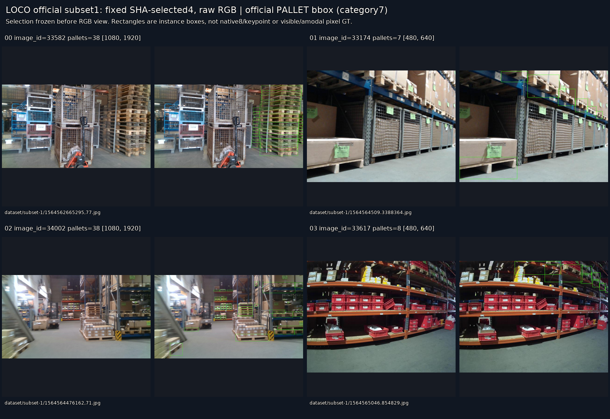
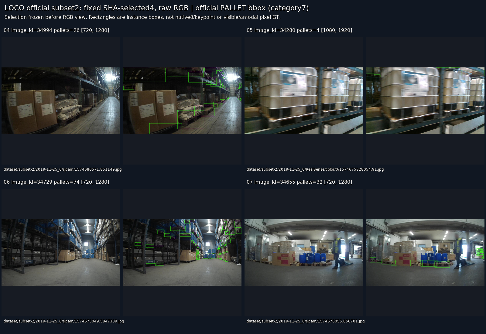
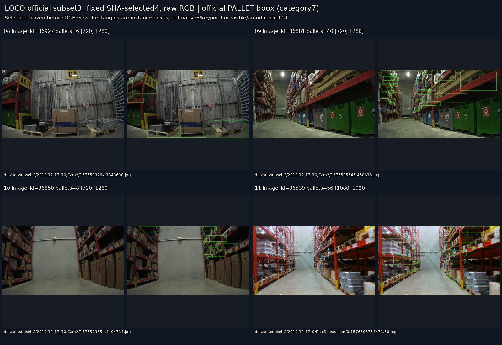
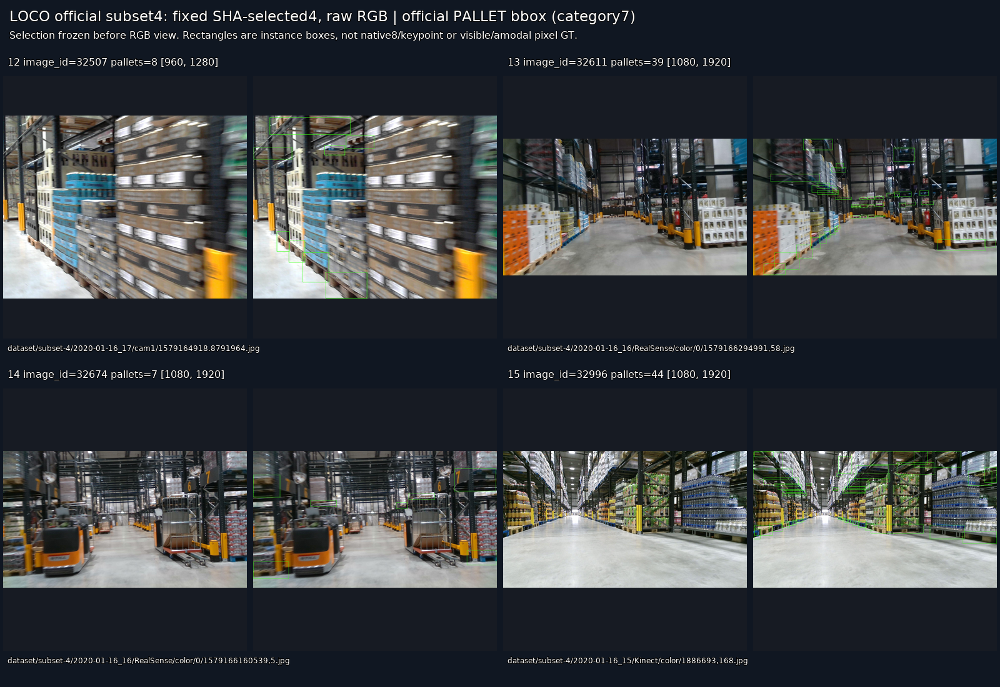
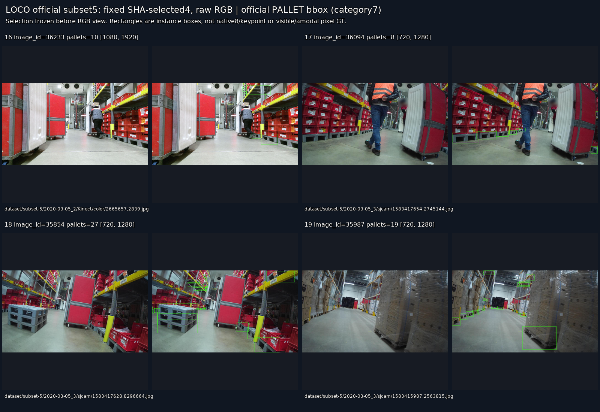

공식 CC0 RGB ZIP769,055,500bytes 및 COCO6파일을 받았다. ZIP JPEG5,593개 전체 CRC·SHA 검산을 통과했으며 현재223 이미지 SHA와 정확히 중복되는 파일은0개였다. 전체압축 해제 없이 사전SHA로 고정한20개(공식subset별4개)만 추출·보았다.
실제 COCO는5,097이미지·151,428객체이며 pallet120,445개(4,727이미지)다. README5593/152421과 다르다. ZIP의 나머지496이미지는 미어노테이션으로 남기며 부재/음성 정답으로 바꾸지 않는다. all/subset ID는 재export되어 다르지만 path/HW/어노테이션 기하가 일치했다.
실제 평판 목재·청색/회색 플라스틱 팔레트, 많은 instance, 적재·랙·조도·blur가 확인됐다. 그러나 제공되는 것은 주로 bbox이고 native8·키포인트·외부/자기 가림 라벨은 없다. segmentation단순사각형150,568개, 기타860개이며 isbboxFalse48개도 독립검사상 단순사각형이다. visible/full mask로 승격하지 않았다. 아래녹색은 공식pallet bbox이며 새모델추론이 아니다.
학습 등록은 native8/cue-reference 및 촬영 계열 분리 계약까지 보류한다. 공개source미리보기는공식val1/4도 포함했음을 명시한다. 현재RGB/GT/score/weights접근, 학습, 새추론, PnP는0이다.




